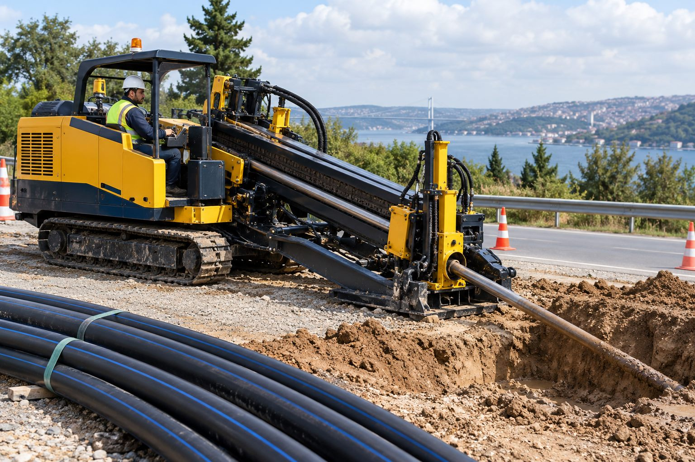

Trafik kesilmez
Yol kapanmaz, asfalt sökülmez; şehir yaşamı uygulama boyunca akmaya devam eder.
Hizmetlerimiz · 01

01Yönlendirilebilir Yatay Sondaj · Yiba saha uygulamasıYönlendirilebilir Yatay Sondaj
Yolların, dere yataklarının ve yapıların altından, yüzeyi açmadan ve trafiği kesmeden kontrollü hat geçişi.
Yönlendirilebilir yatay sondaj (HDD), altyapı borularının planlanan bir güzergâhta yer altından yönlendirilerek geçirilmesini sağlayan kazısız bir yöntemdir. Giriş ve çıkış noktası dışında kazı yapılmaz; pilot delgi, genişletme ve boru çekme aşamaları tek makine hattında tamamlanır.
Doğalgaz, içme suyu, kanalizasyon, elektrik ve fiber optik hatlarında; karayolu, demiryolu, dere ve kanal geçişlerinde tercih edilir. Yiba, 2000'den bu yana farklı zemin ve mesafelerde yönlendirilebilir yatay sondaj uygulamaları gerçekleştirmektedir.
Neden Yiba?
Yol kapanmaz, asfalt sökülmez; şehir yaşamı uygulama boyunca akmaya devam eder.
Güzergâh yer altında izlenir ve yönlendirilir; mevcut hatlara zarar verilmez.
Daha az hafriyat, daha az makine hareketi, korunan peyzaj ve su yapıları.
Açık kazıya göre çok daha kısa sürede tamamlanır; sosyal maliyet düşer.
Sık sorulan sorular
Kil, kum, çakıl, dolgu ve uygun kaya zeminlerde uygulanabilir. Zemin sınıfına göre matkap ucu, rayba ve sondaj sıvısı seçimi yapılır.
HDPE, PE100, çelik ve koruma kılıf boruları çekilebilir. Boru çapı ve uzunluğu makine kapasitesine göre planlanır.
Kısa yol altı geçişleri çoğunlukla günler içinde tamamlanır; süre geçiş uzunluğu, boru çapı ve zemin koşullarına bağlıdır.